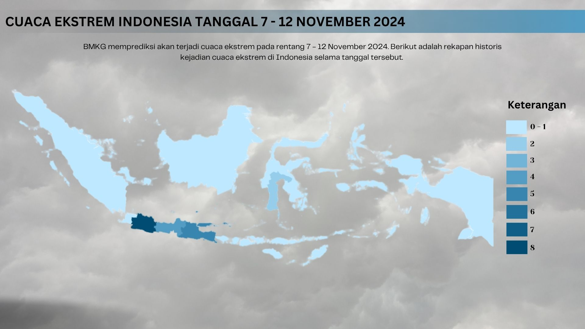

Cuaca Ekstrem di Indonesia
BMKG memprediksi akan terjadi cuaca ekstrem pada rentang 7 - 12 November 2024.

Per tanggal 6 November 2024, Badan Meteorologi, Klimatologi, dan Geofisika (BMKG) merilis prediksi bahwa cuaca ekstrem berpotensi melanda beberapa wilayah di Indonesia pada rentang 7 hingga 12 November 2024. Menindaklanjuti prediksi tersebut, Badan Nasional Penanggulangan Bencana (BNPB) kemudian merilis data historis kejadian cuaca ekstrem yang telah terjadi di sejumlah wilayah di Indonesia pada periode tersebut. Tercatat cuaca ekstrem terjadi sebanyak 22 kali selama rentang tanggal tersebut dengan lokasi yang berbeda - beda. Peta di atas menunjukkan sebaran kejadian, di mana Jawa Barat sebagai daerah dengan kejadian tertinggi dengan rincian kejadian sebagai berikut:
| Tanggal Kejadian | Kabupaten/Kota | Provinsi | Penyebab |
|---|---|---|---|
| 07 November 2024 | Bogor | Jawa Barat | Hujan deras dan angin kencang |
| 07 November 2024 | Sumbawa | Nusa Tenggara Barat | Hujan deras dan angin kencang |
| 08 November 2024 | Bondowoso | Jawa Timur | Hujan deras dan angin kencang |
| 08 November 2024 | Luwu Timur | Sulawesi Selatan | Hujan deras dan angin kencang |
| 08 November 2024 | Luwu Utara | Sulawesi Selatan | Hujan deras dan angin kencang |
| 09 November 2024 | Sukabumi | Jawa Barat | Hujan deras dan angin kencang |
| 09 November 2024 | Bogor | Jawa Barat | Hujan deras dan angin kencang |
| 09 November 2024 | Bogor | Jawa Barat | Hujan sedang dan angin kencang |
| 09 November 2024 | Kota Bogor | Jawa Barat | Hujan deras dan angin kencang |
| 09 November 2024 | Blora | Jawa Tengah | Hujan deras dan angin kencang |
| 09 November 2024 | Grobogan | Jawa Tengah | Hujan deras dan angin kencang |
| 09 November 2024 | Demak | Jawa Tengah | Hujan deras dan angin kencang |
| 09 November 2024 | Kebumen | Jawa Tengah | Hujan deras dan angin kencang |
| 09 November 2024 | Lamongan | Jawa Timur | Hujan deras dan angin kencang |
| 09 November 2024 | Bondowoso | Jawa Timur | Hujan deras dan angin kencang |
| 09 November 2024 | Banjar | Kalimantan Selatan | Hujan deras dan angin kencang |
| 10 November 2024 | Serang | Banten | Hujan deras dan angin kencang |
| 10 November 2024 | Bogor | Jawa Barat | Hujan deras dan angin kencang |
| 11 November 2024 | Bogor | Jawa Barat | Hujan deras dan angin kencang |
| 11 November 2024 | Trenggalek | Jawa Timur | Hujan deras dan angin kencang |
| 11 November 2024 | Kota Kediri | Jawa Timur | Hujan deras dan angin kencang |
| 12 November 2024 | Kota Sukabumi | Jawa Barat | Hujan deras dan angin kencang |
Tingginya intensitas cuaca ekstrem ini disebabkan oleh adanya Siklon Tropis Yinxing di sekitar Laut Filipina. Menurut BMKG, siklon ini berdampak terhadap dinamika cuaca di Indonesia walaupun tidak secara langsung. Siklon ini menyebabkan adanya peningkatan curah hujan dan peningkatan tinggi gelombang laut. Di sisi lain, dinyatakan juga oleh Direktur Meteorologi Publik BMKG, Andri Ramdhani, bahwa terdapat fenomena Gelombang Kelvin dan Rossby yang turut mempengaruhi tingginya intensitas cuaca ekstrem dikarenakan fenomena ini menyebabkan peningkatan eksistensi massa uap air basah. Hal ini menjadikan adanya distraksi pada pola angin yang berdampak terhadap peningkatan pertumbuhan awan hujan.
Melihat tingginya intensitas kejadian dari cuaca ekstrem yang bisa berdampak terhadap bencana hidrometeorologis lainnya seperti banjir dan tanah longsor, maka masyarakat dihimbau untuk selalu waspada dan melakukan antisipasi dini sehingga dampak cuaca ekstrem dapat diminimalkan, sehingga keselamatan dan keamanan bersama tetap terjaga.